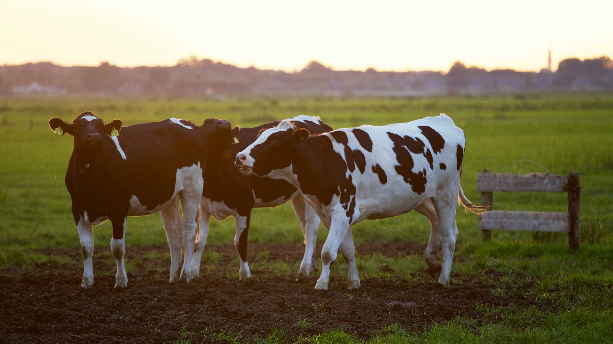
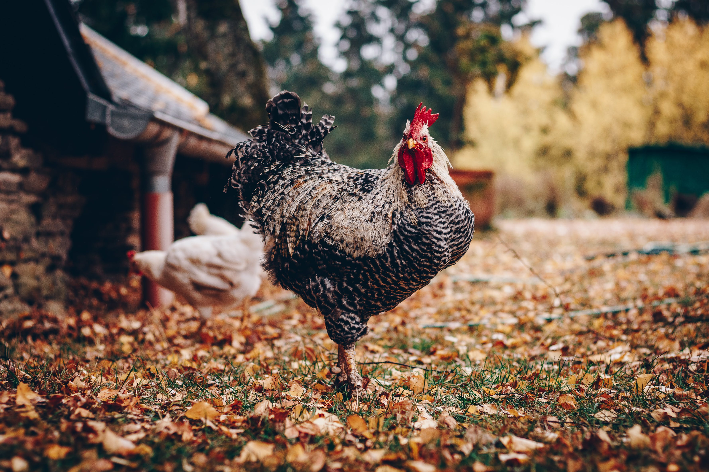
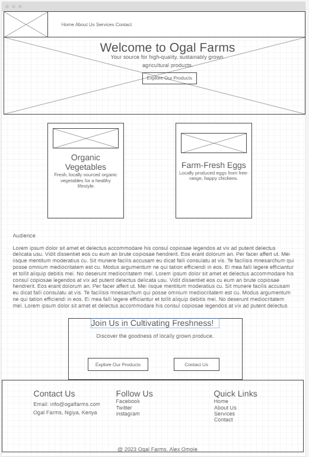
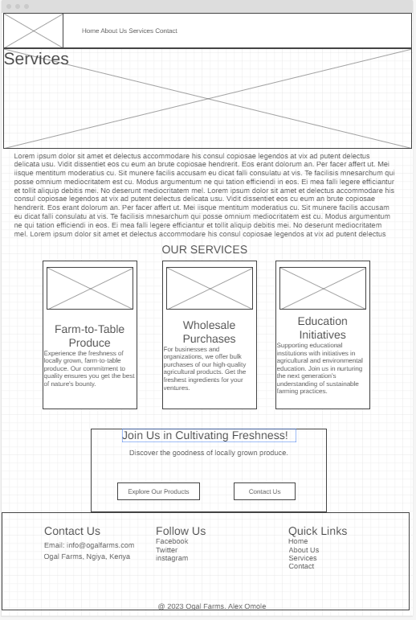
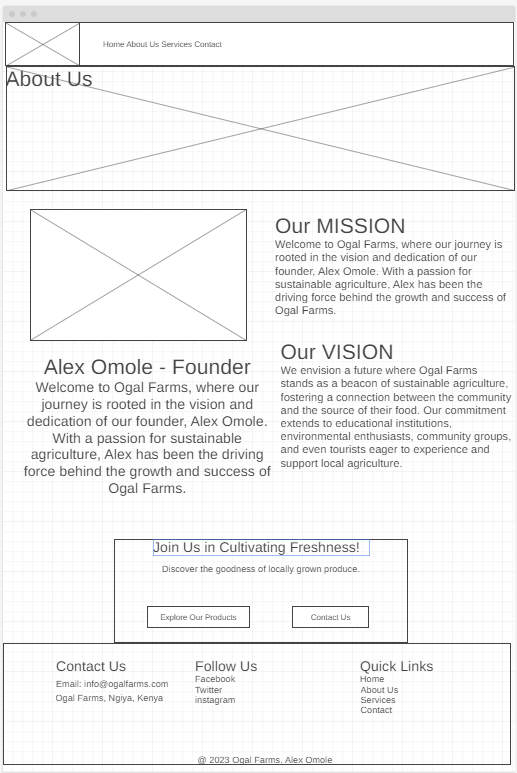

Overview
Purpose
Welcome to Ogal Farms, where we're passionate about cultivating high-quality, sustainably grown agricultural products. Our mission is clear: to enrich our community by providing fresh, nutritious produce while advocating for environmentally responsible farming practices. We are dedicated to delivering wholesome, locally sourced food to our customers, thereby supporting local agriculture and nurturing a healthy ecosystem.
Audience
Our audience includes:
- Local Consumers: Individuals and families in the local community seeking fresh, organic produce and supporting local agriculture.
- Restaurants and Cafes: Local eateries and restaurants looking for sustainable ingredients for their dishes.
- Wholesale Buyers: Businesses and organizations interested in bulk purchases of agricultural products.
- Farmers' Markets: Attendees of farmers' markets in the area looking for locally grown food options.
- Educational Institutions: Schools and educational programs interested in agricultural and environmental education.
- Environmental and Sustainability Enthusiasts: Individuals and groups with a focus on eco-friendly practices.
- Local Community Groups: Organizations, clubs, and community groups looking to engage in community-supported agriculture.
- Tourists: Visitors interested in experiencing local agriculture and purchasing farm-fresh products.
Branding
Website Logo
Style Guide
Color Palette
Palette URL: https://coolors.co/396e94-e7c24f-a43312-381d2a-aabd8c| Primary | Secondary | Accent 1 | Accent 2 |
|---|---|---|---|
| #396E94 | #E7C24F | #A43312 |
Typography
Heading Font: Merriweather
[Reasoning]
Paragraph Font: Open sans
[Reasoning]
Normal paragraph example
The best Whitewater Rafting in Colorado, White Water Rafting Company offers rafting on the Colorado and Roaring Fork Rivers in Glenwood Springs. Since 1974, we have been family owned and operated, rafting the Shoshone section of Glenwood Canyon and beyond.
Colored paragraph example
Trips vary from mild and great for families, to trips exclusively for physically fit and experienced rafters. No matter what type of river adventures you are seeking, White Water Rafting Company can make it happen for you.
Navigation
Site Map
Content
Home page
Welcome to Ogal Farms, a haven for enthusiasts of high-quality, sustainably grown agricultural products. Our homepage serves as the gateway to a world where passion for cultivation meets a commitment to community enrichment. At Ogal Farms, our mission is crystal clear: to provide the local community with fresh, nutritious produce while championing environmentally responsible farming practices. As you explore our homepage, you'll find a narrative that unfolds our dedication to delivering wholesome, locally sourced food. We take pride in supporting local agriculture and nurturing a healthy ecosystem. The vibrant images on this page capture the essence of Ogal Farms, showcasing lush fields, ripe harvests, and the hardworking hands that bring nature's bounty to your table. Whether you're a local consumer seeking organic delights, a restaurant in search of sustainable ingredients, or a business looking for bulk agricultural purchases, Ogal Farms is here for you. Our commitment extends to educational institutions, environmental enthusiasts, community groups, and even tourists eager to experience and support local agriculture. Join us on this digital journey through our homepage, where the Ogal Farms story unfolds with a promise of freshness, sustainability, and a flourishing community. Welcome to a virtual farmstead that goes beyond cultivating crops—it cultivates connections, nourishing both the land and the lives it touches
Images for the Home page
- 

About Us
Welcome to Ogal Farms, a testament to the vision and dedication of its founder, Alex Omole. Established as a labor of love, Ogal Farms embodies the principles of sustainable agriculture. Our story begins with a profound vision—to enrich our local community with the bounty of fresh, organic produce while actively supporting and promoting local agriculture. Founded by Alex Omole, Ogal Farms has been on a journey of growth and commitment since its inception. Our mission goes beyond cultivating crops; it is a dedication to fostering a healthy and vibrant ecosystem through eco-friendly farming practices. Sustainability is not just a goal; it is an integral part of our identity. At the heart of our philosophy is the belief that agriculture should be a force for good, contributing to the well-being of both the community and the environment. From the careful cultivation of our fields to the thoughtful selection of sustainable farming methods, Ogal Farms stands as a beacon of responsible agriculture. As you delve into the narrative of Ogal Farms, you'll discover a story shaped by passion, dedication, and a genuine commitment to making a positive impact. Join us on this journey towards a healthier, more sustainable future, rooted in the principles of Ogal Farms.
Images for About Us


Services
Welcome to Ogal Farms' Services, where we take pride in offering a diverse range of agricultural solutions tailored to meet a spectrum of needs. Whether you are a restaurant in search of fresh, high-quality produce, a wholesale buyer looking for bulk purchases, or an educational institution seeking support for agricultural and environmental education initiatives, Ogal Farms has you covered. For local restaurants and cafes, we provide a consistent supply of fresh and flavorful produce sourced directly from our fields. Our commitment to quality ensures that your culinary creations are infused with the essence of sustainable and locally grown ingredients. Wholesale buyers find a reliable partner in Ogal Farms, where we accommodate bulk purchases of our agricultural products. With a focus on efficiency and quality, we aim to be your go-to source for the finest produce. At local farmers' markets, our products stand as a staple, offering attendees the opportunity to bring home the freshness of Ogal Farms. We believe in fostering a connection between the community and the source of their food, promoting a sustainable and resilient local food system. Beyond commercial ventures, Ogal Farms is proud to contribute to education. Our support for educational institutions encompasses initiatives in agricultural and environmental education. We believe in nurturing the next generation's understanding of sustainable farming practices, encouraging a sense of responsibility towards the environment. Explore the diverse array of services at Ogal Farms, where each offering is rooted in our commitment to quality, sustainability, and community enrichment.
Images for Services
- 

Wireframes
Create three wireframes for your site. One for each page and list them here
Home
[Any additional details about home that the wireframe does not make clear]
Services
[Any additional details about page 2 that the wireframe does not make clear]
About Us
[Any additional details about page 3 that the wireframe does not make clear]
